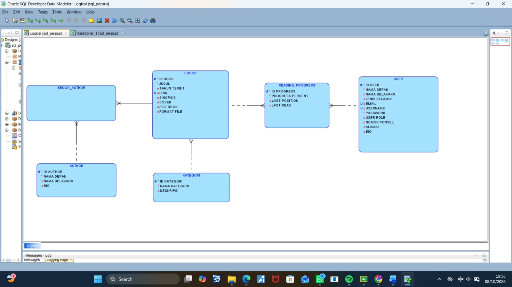
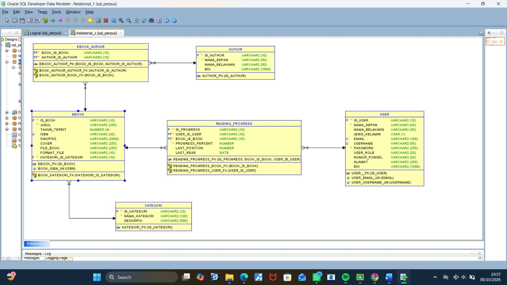

ERD & Skema Database optl_pustaka
Tujuh tabel 3NF plus satu VIEW. Diagram relasi di bawah interaktif (zoom, geser, layar penuh), dan dua gambar ERD asli dari repo — ERD Logical dan ERD Relasional — ditampilkan untuk pembanding.
Aturan relasi penting
collectionsdanreading_progressunik per (user_id, book_id) — dijaga UNIQUE KEY di database, bukan hanya logika PHP.- Semua FK RESTRICT: buku tidak bisa dibuang begitu ada rak/progres yang menunjuknya.
books.is_activeadalah soft-delete; koleksi & progres pengguna tetap utuh.- Halaman publik membaca
v_books_catalogsehingga 0 JOIN di PHP.
Data seed demo
usersauthorspublishersgenresbookscollectionsreading_progressSumber: database/for_demo_optl_pustaka.sql (dump phpMyAdmin 23 Nov 2026,
MySQL 9.6). Termasuk akun demo, 11 buku dengan berkas & checksum asli, dan contoh baris
ber-source system maupun user.
Diagram Relasi (mermaid)
erDiagram
USERS ||--o{ COLLECTIONS : "menyimpan"
BOOKS ||--o{ COLLECTIONS : "difikatkan"
USERS ||--o{ READING_PROGRESS : "mencatat"
BOOKS ||--o{ READING_PROGRESS : "dibaca"
AUTHORS ||--o{ BOOKS : "menulis"
PUBLISHERS ||--o{ BOOKS : "menerbitkan"
GENRES ||--o{ BOOKS : "dikategorikan"
USERS {
int user_id PK
varchar email UK "unik, login"
varchar password_hash "Bcrypt"
varchar display_name
enum role "admin|member"
tinyint is_active "1 aktif, 0 nonaktif"
timestamp created_at
}
BOOKS {
int book_id PK
int author_id FK
int publisher_id FK
int genre_id FK
varchar title
varchar slug UK "identitas publik"
text description
smallint published_year
varchar isbn UK
varchar storage_path UK "storage/ebooks/{id}.pdf"
int file_size
char checksum_sha256
int page_count
varchar cover_path
tinyint is_active "soft-delete"
timestamp created_at
}
COLLECTIONS {
int collection_id PK
int user_id FK
int book_id FK
enum status "to_read|reading|finished|not_interested"
enum status_source "system|user"
timestamp created_at
}
READING_PROGRESS {
int progress_id PK
int user_id FK
int book_id FK
int last_page "clamp 1..page_count"
timestamp updated_at
}
AUTHORS {
int author_id PK
varchar name
varchar slug UK
varchar country
text bio
timestamp created_at
}
PUBLISHERS {
int publisher_id PK
varchar name
varchar slug UK
varchar city
timestamp created_at
}
GENRES {
int genre_id PK
varchar name UK
text description
}ERD Asli dari Repo


Penjelasan Tiap Tabel
users
Akun aplikasi
Email unik sebagai identitas login, password_hash Bcrypt ($2y$12), role admin/member, dan is_active untuk penonaktifan (soft-delete). Akun demo: admin@pustaka.com dan andi@email.com.
publishers
Master penerbit
Nama + slug unik + kota. Tidak bisa dihapus (BR-06.5); datalist kota berasal dari includes/data_helper.php.
genres
Master kategori
Sepuluh genre seed (Teknologi, Novel, Sains, …). name unik dan menjadi basis filter katalog.
authors
Master penulis
Nama + slug unik + negara + bio. Profil publik author.php?slug=… membaca tabel ini.
books
Katalog buku
Inti sistem: FK ke author/publisher/genre, slug & ISBN unik, storage_path {book_id}.pdf, checksum SHA-256, page_count, cover_path, is_active sebagai soft-delete.
collections
Rak Saya
Satu baris per (user_id, book_id) — UNIQUE uq_collections_user_book. Empat status enum + status_source system/user yang mengatur lifecycle BR-03.
reading_progress
Progres baca
Hanya last_page per (user_id, book_id) — UNIQUE uq_progress_user_book. Persentase tidak pernah disimpan (BR-04.1).
v_books_catalog
VIEW katalog
Gabungan books+authors+genres+publishers. Semua halaman publik cukup SELECT * — 0 JOIN di PHP (BR-05.2).